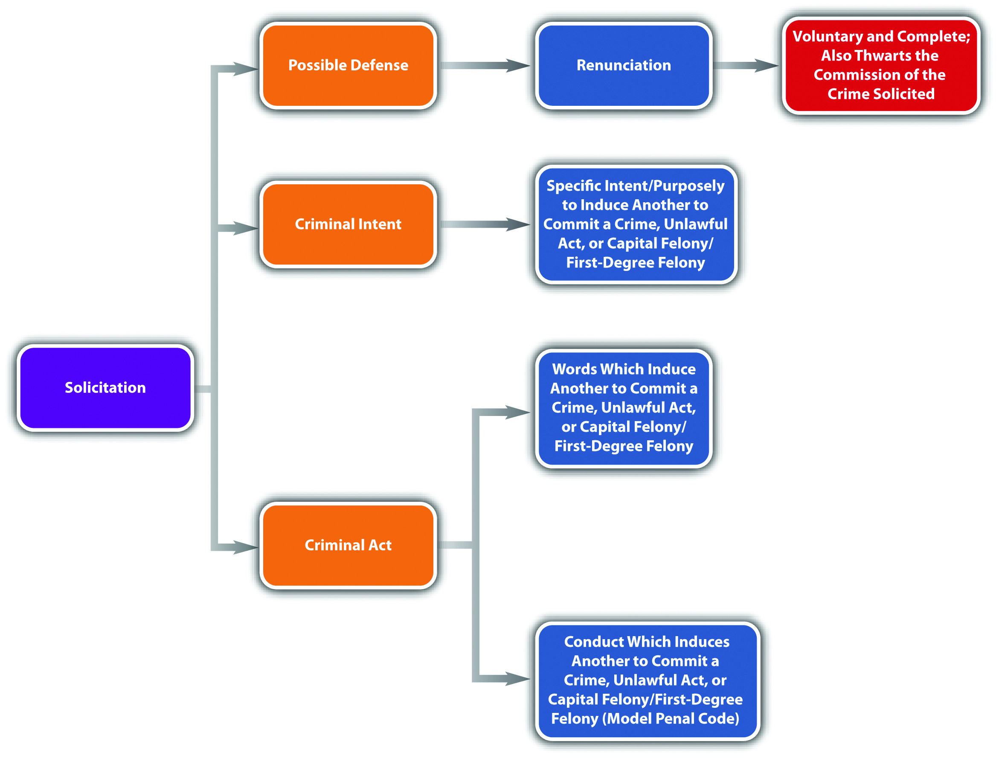

SolicitationRequesting another to commit any crime, capital felony, or first-degree felony. can be a precursor to conspiracy because it criminalizes the instigation of an agreement to commit a criminal offense. Solicitation is an inchoate crime because it is possible that the conspiracy will never be formed, and the crime that is its object will not be committed. Many of the rules that apply to attempt and conspiracy also apply to solicitation, as is discussed in Section 8.3 "Solicitation".
The criminal act element required for solicitation is generally words that induce another to commit a capital felony, first-degree felony,Tex. Penal Code § 15.03, accessed January 6, 2011, http://law.onecle.com/texas/penal/15.03.00.html (accessed January 6, 2011). or any crime.N. Y. Penal Law § 100.00, accessed January 6, 2011, http://law.onecle.com/new-york/penal/PEN0100.00_100.00.html. Typical words of inducement are request, command, encourage, hire, procure, entice, and advise. The Model Penal Code defines solicitation as follows: “[a] person is guilty of solicitation to commit a crime if with the purpose of promoting or facilitating its commission he commands, encourages or requests another person to engage in specific conduct which would constitute such crime” (Model Penal Code § 5.02(1)). However, the Model Penal Code does not require direct communication, if “conduct was designed to effect such communication.” (Model Penal Code § 5.02(2)).
Jimmy calls his friend Choo, who is reputed to be a “fence,” and asks Choo to help him sell some stolen designer shoes. If Jimmy is in a jurisdiction that criminalizes the “request” to commit any crime, Jimmy probably has committed the criminal act element required for solicitation. If Jimmy is in a jurisdiction that only criminalizes solicitation to commit a capital felony or first-degree felony, then Jimmy probably has not committed the criminal act element required for solicitation because selling stolen property is not generally graded that severely. If Jimmy is in a jurisdiction that follows the Model Penal Code, and Jimmy and Choo had a long-standing arrangement whereby Jimmy puts stolen items in a storage facility so that Choo can sell them, Jimmy will not have to communicate his request to Choo. He simply will have to place the shoes in the storage facility to commit the criminal act element required for solicitation.
The criminal intent element required for solicitation is specific intent or purposely to promote the crime’s commission in most jurisdictions and under the Model Penal Code, as set forth in Section 8.3.1 "Solicitation Act".Or. Rev. Stat. § 161.435, accessed January 6, 2011, http://law.onecle.com/oregon/161-general-provisions/161.435.html.
Review the solicitation act example in Section 8 "Example of Solicitation Act". In this example, Jimmy desires Choo to commit the crime of selling stolen property so that he can reap a benefit from his stolen designer shoes. Thus Jimmy probably has the criminal intent required for solicitation. If Jimmy is in a jurisdiction that criminalizes solicitation to commit any crime, Jimmy could be charged with and convicted of this offense.
Similar to conspiracy, many jurisdictions allow renunciation as an affirmative defense to solicitation.Ariz. Rev. Stat. § 13-1005, accessed January 7, 2011, http://www.azleg.gov/FormatDocument.asp?inDoc=/ars/13/01005.htm&Title=13&DocType=ARS. The renunciation must be voluntary and complete and must thwart the crime that is solicited. As the Model Penal Code states, “it is an affirmative defense that the actor, after soliciting another person to commit a crime, persuaded him not to do so or otherwise prevented the commission of the crime, under circumstances manifesting a complete and voluntary renunciation of his criminal purpose” (Model Penal Code § 5.02(3)).
Jurisdictions vary as to how they grade solicitation. Some jurisdictions grade solicitation according to the crime solicited, with more serious crimes accorded a more severe solicitation punishment.Ala. Code § 13A-4-1(f), accessed January 7, 2011, http://law.onecle.com/alabama/criminal-code/13A-4-1.html. Others grade solicitation the same as the crime solicited, with exceptions.N.H. Rev. Stat. Ann. § 629:2(IV), accessed January 7, 2011, http://law.justia.com/codes/new-hampshire/2009/TITLELXII/CHAPTER629/629-2.html. Some states grade solicitation as a misdemeanor, regardless of the crime solicited.Commonwealth v. Barsell, 424 Mass. 737 (1997), accessed January 7, 2011, http://scholar.google.com/scholar_case?case=8677391463974362410&hl=en&as_sdt=2&as_vis=1&oi=scholarr (accessed January 7, 2011).
Figure 8.8 Diagram of Solicitation
Answer the following questions. Check your answers using the answer key at the end of the chapter.